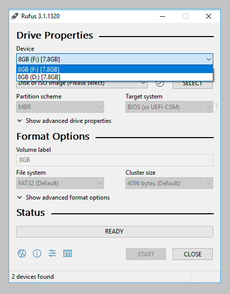
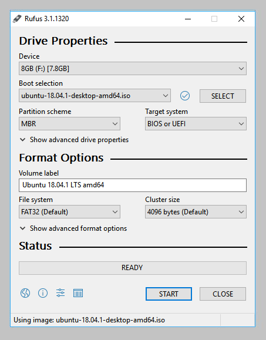
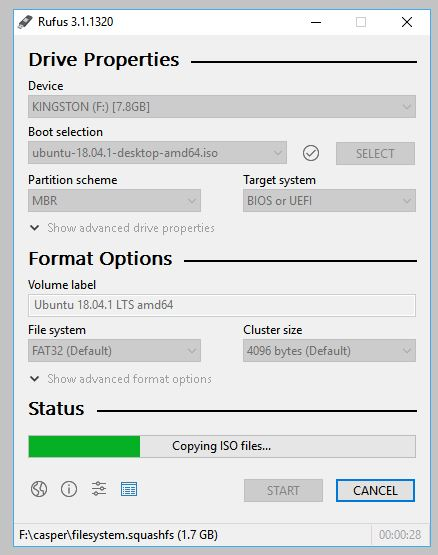
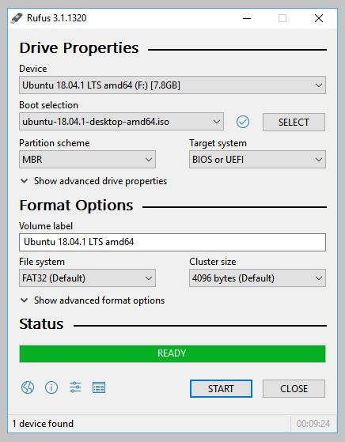

ubuntu的USB安装盘制作
文章目录
需要：
- 一个4GB或更大的USB盘
- Microsoft Windows XP或更高版本
- Rufus，一款免费的开源USB工具
- 一个Ubuntu ISO文件
USB选择
执行以下操作在Rufus中配置USB设备：

- 启动Rufus
- 插入USB
- Rufus将更新以在“ 设备”字段中设置设备
如果选择的设备不正确（可能您有多个USB存储设备），请从设备字段的下拉菜单中选择正确的设备
引导选择和分区方案

选择Boot选项。选择将是Non bootable和FreeDOS。由于您要创建可启动的Ubuntu设备，请选择FreeDOS。
分区方案（MBR）和目标系统（BIOS（或UEFI-CSM））的默认选择是合适的（并且是唯一可用的选项）。
选择Ubuntu ISO文件

要选择先前下载的Ubuntu ISO文件，请单击“Boot selection”右侧的SELECT。如果这是“下载”文件夹中唯一的ISO文件，则只会看到列出的一个文件。 选择适当的ISO文件，然后单击“ 打开”
写ISO

该卷标将被更新，以反映选择的ISO。 将所有其他参数保留为默认值，然后单击“ 开始”以启动写入过程。
额外下载
您可能会收到提醒，Rufus需要其他文件才能完成ISO的编写。如果出现此对话框，请选择是以继续
警告
Rufus检测到Ubuntu ISO是ISOHybrid图像的警报。这意味着相同的图像文件可以用作DVD和USB的源，而无需转换。 保持Write in ISO Image模式，然后单击OK继续。

Rufus还会警告您，所选USB设备上的所有数据都将被销毁。这是一个很好的时刻来仔细检查您是否选择了正确的设备，然后在您确信自己拥有时点击确定。

编写ISO
ISO现在将写入您的USB，Rufus中的进度条将显示您在此过程中的位置。使用相当现代化的机器，这应该需要大约10分钟。经过的总时间显示在Rufus窗口的右下角。

安装完成
当Rufus完成USB设备的写入后，状态栏将显示为绿色，并且中心将显示READY字样。选择CLOSE以完成写入过程。

文章作者 Jeff Liu
上次更新 2019-01-29